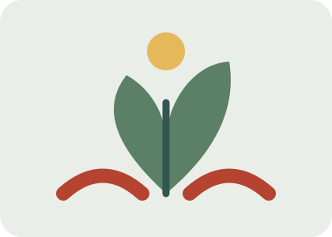

1. Educar en convivencia
Organizar talleres escolares sobre resolución pacífica de conflictos, respeto, igualdad y derechos humanos.
ODS 16 · PROPUESTAS
Una sociedad más justa necesita compromiso, educación y buenas instituciones.
Los problemas relacionados con la paz y la justicia necesitan respuestas de las instituciones y de la ciudadanía. La prevención de la violencia, la educación en derechos humanos y la transparencia son medidas importantes para avanzar hacia el ODS 16.
Red por la Equidad propone las siguientes líneas de actuación como campaña educativa.

Organizar talleres escolares sobre resolución pacífica de conflictos, respeto, igualdad y derechos humanos.
Crear materiales sencillos que expliquen dónde pedir orientación y cómo funcionan las instituciones.
Promover espacios inclusivos donde se escuchen y respeten las distintas opiniones.
Apoyar el acceso a información pública y la rendición de cuentas de las instituciones.
| Acción | Objetivo | Resultado esperado |
|---|---|---|
| Talleres de convivencia | Prevenir conflictos | Mejorar el diálogo y el respeto |
| Campaña informativa | Dar a conocer los derechos | Más personas informadas |
| Debates participativos | Escuchar diferentes voces | Mayor participación |
| Difusión de datos oficiales | Promover la transparencia | Opinión pública mejor informada |
Considero que las soluciones propuestas son necesarias para conseguir una sociedad más justa y
pacífica. Para lograrlo, es importante mejorar las instituciones, luchar contra la corrupción, garantizar
que se respeten las leyes y proteger los derechos de todas las personas. También pienso que la
educación tiene un papel fundamental, porque ayuda a fomentar el respeto, la
tolerancia y la igualdad. En mi opinión, los cambios no se consiguen de un día para otro, pero con esfuerzo y
colaboración se puede avanzar hacia un mundo mejor.